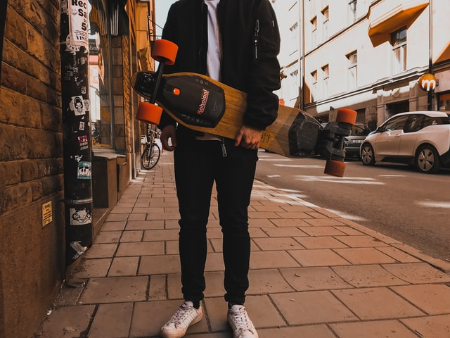

< 저의취미는 롱보드입니다.>
제 성격의 장점은 목표한 부분을 향해 성실히 끈기 있게 몰입한다는 것입니다. 23살 때 저는 롱보드(긴 스케이트보드)라는 취미 생활을 시작하였습니다. 그때 스케이트보드를 타는 사람이 없어 혼자 타는 일이 많았습니다. 또한, 스케이트보드는 트릭 연습하면 할수록 데크(나무판 부분) 망가져 바꿔주어야 했습니다. 하지만 데크의 가격이 학생인 제가 부담하기에는 많은 부담감이 있었습니다. 그러하여 저의 목표는 실력을 많이 키워서 스폰서를 받아 보드를 조금 더 많이 알리고 취미생활을 홍보하여 많은 사람과 보드를 즐기는 것이었습니다.
서울에 올라가 대회를 참여하며 강릉에서도 SNS와 네이버 카페를 운영하면서 보드에 대한 홍보를 게을리하지 않았고 강릉에서 많은 사람이 볼 수 있게 단오에 한복을 입고 행진행사를 하는 퍼포먼스를 보였습니다. 매일 저녁 보드를 가지고 나가 혼자 연습을 꾸준히 하였고, 해외영상들과 저의 영상을 비교하면서 기술이 실패하는 이유 혹은 이러한 방법을 하면 새로운 기술을 만들어 낼 수 있지 않을까 하는 고민을 하면서 꾸준히 실력을 쌓아 나갔습니다. 서울에서든 강릉에서든 활동을 열심히 하는 모습에 akaboardshop이라는 보드가게에서 스폰을 받아보겠냐는 제안이 왔습니다. 저는 흔쾌히 승낙하였고 이후에도 많은 홍보를 하고 즐겁게 보드를 즐겼습니다. 그렇게 시간이 지나 사람들과 만나며 ‘마카난제‘라는 강릉을 대표하는 롱보드크루를 만들 수 있었습니다.
저는 지금까지 보드를 즐기며 지내고 있고 홍보를 열심히 하고 활동한 만큼 많은 지역 사람들을 만나서 넓은 인맥을 가질 수 있었습니다. 또한, 많은 사람을 만나면서 사람을 대하는 방법을 알 수 있었고 제가 목표하고자 했던 부분들을 이루면서 끈기와 노력으로 안 될 부분은 없다는 것을 알 수 깨달았습니다.